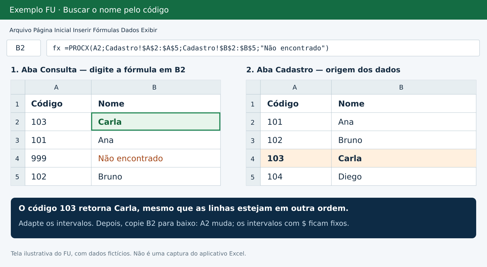

Tem um código em uma aba e precisa trazer o nome de outra? Use o PROCX. Veja uma fórmula pronta e adapte as células ao seu arquivo.
=PROCX(A2;Cadastro!$A$2:$A$5;Cadastro!$B$2:$B$5;"Não encontrado")Cole em B2 da aba Consulta. Substitua as células e o nome Cadastro pelos intervalos e pela aba que você quer consultar.
Entenda o que trocar
- A2: código que você quer procurar.
- Cadastro!$A$2:$A$5: coluna onde esse código será procurado.
- Cadastro!$B$2:$B$5: coluna com o nome que será devolvido.
- "Não encontrado": mensagem se não houver correspondência.


Faça com este exemplo
- Crie as abas Cadastro e Consulta.
- Em Cadastro, preencha A1 com Código e B1 com Nome. Nas linhas 2 a 5: 101/Ana, 102/Bruno, 103/Carla e 104/Diego.
- Em Consulta, coloque 103 em A2 e a fórmula em B2. O resultado esperado é Carla.
- Preencha os códigos seguintes em A3, A4 e A5. Copie B2 para baixo.
O A2 acompanha cada linha da consulta. Os intervalos com $ permanecem fixos. Se a sua base tiver 500 linhas, altere os dois intervalos para terminar na linha 500.
Os intervalos de procura e de retorno precisam ter o mesmo tamanho e estar alinhados por linha. Códigos repetidos retornam a primeira correspondência na busca padrão; confira duplicidades antes de usar o resultado.
A fórmula não funcionou?
- Não encontrado: confirme se o código existe e se um lado está como número e o outro como texto.
- #NOME?: confira a versão e o idioma do Excel. PROCX está disponível no Excel 2021 e Microsoft 365, mas não no Excel 2016 ou 2019.
- Aba com espaço: use aspas simples, por exemplo
'Meu Cadastro'!$A$2:$A$5.
Fonte técnica: documentação da função PROCX - Microsoft.
Seu Excel não tem PROCX?
Para este mesmo exemplo, com os códigos na primeira coluna e os nomes na segunda, use:
=SEERRO(PROCV(A2;Cadastro!$A$2:$B$5;2;FALSO);"Não encontrado")FALSO exige correspondência exata. Confira a documentação do PROCV. O SEERRO também pode esconder outros erros: revise as referências se uma informação existente não aparecer.